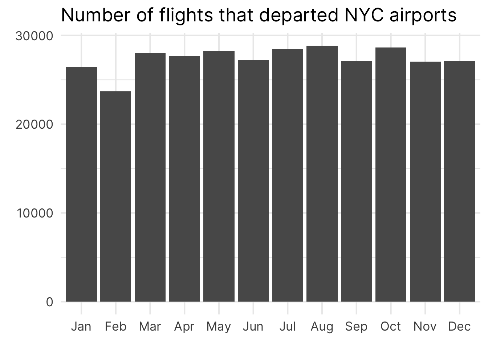

How to Order Bars and Lines in ggplot
With visualizations, it’s always better if there is some visual order in your charts. For example, take a look at these two bar charts. Which one do you find easier to read? And which chart gives you a better overview over the data?

If you are like most people, then chances are that you will find that the sorted bar chart is easier to read. This simple action of sorting the bars can give a lot of structure to your data visualization. In turn, your chart is easier to understand for your reader.
Now, this doesn’t always mean that you need to sort them from lowest to highest value. Sometimes, you also need to preserve the intrinsic order of the data. For example, have look a this bar chart.

Here, it doesn’t make sense to sort the bars from lowest to highest because most of the time you are probably interested in the evolution of the bar heights over time. Therefore, sorting the bar by month preserves the intrinsic order of your data.
Thus, meaningfully sorting the visual elements in your chart can make it easier for your reader to get the most out of it. Now that we’re on the same page, let’s figure out how to actually sort our data with ggplot.
Sort bar charts
With ggplot, bar charts will use an alphabetical sorting by default. For example, here’s the code for our first unsorted chart from above.
library(tidyverse)
gt::gtcars |>
count(mfr) |>
ggplot(aes(x = n, y = mfr)) +
geom_col() +
labs(
x = 'Counts',
y = element_blank(),
title = 'Number of Manufacturers in the data set'
)
It is easy to think that if you sort your data, say, with arrange(), then ggplot would understand that you want your bars to be sorted like this as well. So let’s try this.
gt::gtcars |>
count(mfr) |>
arrange(mfr) |>
ggplot(aes(x = n, y = mfr)) +
geom_col() +
labs(
x = 'Counts',
y = element_blank(),
title = 'Number of Manufacturers in the data set'
)Here, we get the exact same result because ggplot by default doesn’t care how you sort the rows of your data. That’s why you have to force ggplot to do what you want. And the way to do that is to transform your data into a factor variable.
In R, factors a special data format that can not only store data, but also store intrinsic orderings. So let us arrange our data again. But this time we also use mutate() and factor() to transform our column into a factor variable.
library(tidyverse)
gt::gtcars |>
count(mfr) |>
mutate(mfr = factor(mfr)) |>
ggplot(aes(x = n, y = mfr)) +
geom_col() +
labs(
x = 'Counts',
y = element_blank(),
title = 'Number of Manufacturers in the data set'
)
Unfortunately, this didn’t do the trick. We left out one important ingredient, namely we have to set the levels of the factor variable. Have a look.
gt::gtcars |>
count(mfr) |>
arrange(n) |>
mutate(mfr = factor(mfr, levels = mfr)) |>
ggplot(aes(x = n, y = mfr)) +
geom_col() +
labs(
x = 'Counts',
y = element_blank(),
title = 'Number of Manufacturers in the data set'
)
Here, we used the mfr column to set the levels in factor(). This worked because we already arranged the rows of our data set to reflect the ordering that we want. So basically, we followed a two-step process.
- We first used
arrange()to sort our data. - Then, we declared a
factorvariable with the correctly sorted levels.
But we can actually do all of this in one step: Meet fct_reorder(). It’s a neat function that can turn a character (i.e. text) or factor variable into a new factor variable whose levels are sorted by some quantity. Hence, fct_reorder() needs two information. The variable that we want to sort and the quantity we want to sort by.
gt::gtcars |>
count(mfr) |>
mutate(mfr = fct_reorder(mfr, n)) |>
ggplot(aes(x = n, y = mfr)) +
geom_col() +
labs(
x = 'Counts',
y = element_blank(),
title = 'Number of Manufacturers in the data set'
)A better understanding of fct_reorder()
Now, I’ve given you a sort of simplistic explanation of what fct_reorder() does. A lot of times, you will be perfectly fine with the explanation I just gave you. But sometimes you need a bit more from fct_reorder(). Let’s have a look at the following chart.
This chart shows you the range of body weights for different penguin species. The dots indicate the minimum and maximum body weights. Here, the weights were computed using the penguins data set from the palmerpenguins package. You don’t have to worry about the exact details, just know that the data that we computed looks like this
min_max_weights
#> # A tibble: 6 × 3
#> species type weight
#> <fct> <chr> <int>
#> 1 Adelie min_weight 2850
#> 2 Adelie max_weight 4775
#> 3 Gentoo min_weight 3950
#> 4 Gentoo max_weight 6300
#> 5 Chinstrap min_weight 2700
#> 6 Chinstrap max_weight 4800From this we can create a chart like the one above as follows.
min_max_weights |>
ggplot(aes(x = weight, y = species)) +
geom_line(linewidth = 1) +
geom_point(size = 3) +
labs(
x = 'Body weight (in g)',
y = element_blank(),
title = 'Range of Body Weights for Different Penguin Species'
)As we’ve discussed, having a visual order in your charts is helpful. Now what if we wanted to sort the line charts so that the left points are ordered like so?

Here, applying fct_reorder() to order the species column of min_max_weights is different. Think about it. For each of the species, we have two values now (minimum and maximum). How is fct_reorder() supposed to handle the sorting in this case? And this is where the third argument in fct_reorder() comes into play.
You see, apart from the variable that is sorted and the quantity by which we sort, fct_reorder() can actually use one more thing. If we pass a function to the .fun argument in fct_reorder(), then this function will be used to consolidate multiple values into a single value.
This is pretty similar to what you do in summarise(). For example, you could manually extract the minimum weight for each species in min_max_weights with summarise() like so.
min_max_weights |>
summarise(
minimum = min(weight),
.by = species
)
#> # A tibble: 3 × 2
#> species minimum
#> <fct> <int>
#> 1 Adelie 2850
#> 2 Gentoo 3950
#> 3 Chinstrap 2700Here, we have used the min() function to consolidate all of the values from the weight column in min_max_weights to a single value for each species. Similarly, you could use a function like max() or mean() too.
min_max_weights |>
summarise(
minimum = min(weight),
maximum = max(weight),
middle = mean(weight),
.by = species
)
#> # A tibble: 3 × 4
#> species minimum maximum middle
#> <fct> <int> <int> <dbl>
#> 1 Adelie 2850 4775 3812.
#> 2 Gentoo 3950 6300 5125
#> 3 Chinstrap 2700 4800 3750All of these functions take a bunch of values and turn them into a single value. And once you’re at that stage, you can sort these values. Coming back to fct_reorder(), this is essentially what the .fun argument does. Let’s have a look.
min_max_weights |>
mutate(species = fct_reorder(species, weight, .fun = min)) |>
ggplot(aes(x = weight, y = species)) +
geom_line(linewidth = 1) +
geom_point(size = 3) +
labs(
x = 'Body weight (in g)',
y = element_blank(),
title = 'Range of Body Weights for Different Penguin Species'
)
Here, we used the min function to sort the species. For each species this will compute the minimum of the two weights that are in min_max_weights and sort the species by this computed minimum.
In effect, this sorts the line charts so that the left points are in ascending order. You could do the same with the right points by replacing the min function with the max function.
min_max_weights |>
mutate(species = fct_reorder(species, weight, .fun = max)) |>
ggplot(aes(x = weight, y = species)) +
geom_line(linewidth = 1) +
geom_point(size = 3) +
labs(
x = 'Body weight (in g)',
y = element_blank(),
title = 'Range of Body Weights for Different Penguin Species'
)
Similarly, you can use mean() or any other function that can take a vector of values and return a single value from this. And with that we have fully understand how fct_reorder() works. With the exact same strategy we can now sort bars, line charts, box plots or whatever else we want to sort in ggplot. Thank you for reading, and we’ll see each other next time.